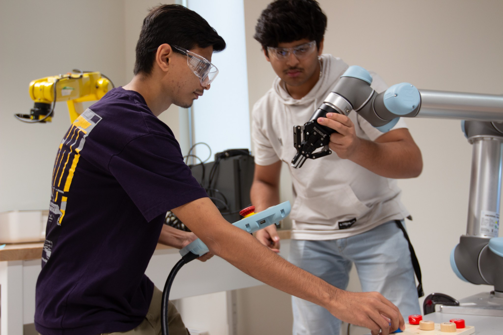

← Back to facilities
Facilities & equipment
Universal Robots cobots
What it is
Universal Robots collaborative robot arms ("cobots").

Students programming one of the lab's Universal Robots cobots with its teach pendant.
How the lab uses it
Universal Robots platforms appear in the industrial automation lab series: the collaborative robot and PLC integration lab (Industrial Automation Lab 5, in preparation) integrates a FANUC or Universal Robots platform with a PLC and validates an interlocked workcell sequence. Students also meet a Universal Robots model in simulation in the Isaac Sim lab series.